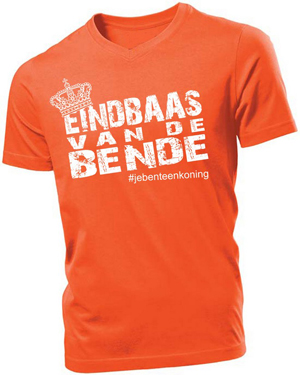

Je Bent Een Koning!
In 2013 scoorden wij meer dan 1.000.000 hits met ons koningslied Je Bent Een Koning, een lied geschreven ter ere van de inhuldiging van koning Willem-Alexander.
Een totaal ongeplande doorbraak in 2013. Daar moesten ze even van bijkomen, er volgde een sabbatical van liefst zeven jaar. Maar nu zijn terug. Allard en Huib hebben – op verzoek van EditieNL – hun wereldhit van destijds in een nieuw jasje gestoken. Omdat het toch wel erg jammer is dat we Koningsdag anders moeten vieren dan normaal.
Je bent een koning (want jij blijft in je woning)
Contact
Contact: jebenteenkoning@gmail.comJe Bent Een Koning!
Eindbaas van de Bende T-Shirt (Uitverkocht)
Er zijn nog een aantal - voornamelijk oranje - exemplaren van het Eindbaas-shirt beschikbaar. Viste je vorige keer achter het net? Update 2020: Uitverkocht.
Laatste nieuws
Utrecht, 26 april 2020
Een totaal ongeplande doorbraak in 2013. Daar moesten ze even van bijkomen, er volgde een sabbatical van liefst zeven jaar. Maar nu zijn terug. Allard en Huib hebben – op verzoek van EditieNL – hun wereldhit van destijds in een nieuw jasje gestoken. Omdat het toch wel erg jammer is dat we Koningsdag anders moeten vieren dan normaal.
Utrecht, 17 april 2014
Vanochtend is een persbericht de wereld ingestuurd: Allard en Huib komen met een nieuw nummer. 23 april a.s. wordt het nieuwe nummer gereleased.
Utrecht, 30 december 2013 - Nieuwjaarsgroet
Utrecht, 2 mei 2013 - Gisteren is bij zowel Allard als Huib een poliep geconstateerd. Het duo mag, van de behandelend KNO-arts, de komende negen maanden niet optreden. In de omgeving van Allard & Huib is met grote verslagenheid gereageerd op het nieuws.
Je Beltoon Koning!
Download nu Je bent een Koning als ringtone voor op je mobiel: Je Bent Een Koning! (Ringtone iPhone) of Je Bent Een Koning! (Ringtone mp3)Persberichten
Utrecht, 17 april 2014 - Allard & Huib komen met nieuw nummer
Koningskoppel Allard & Huib zetten vorig jaar Nederland op zo'n kop met hun alternatief voor het felbekritiseerde koningslied. "Je bent een Koning" werd meer dan een miljoen keer bekeken en bracht het duo onder meer bij Dit Is De Dag (Radio1), De Coen & Sander Show, BNN Today (3FM) en tv-programma's als Één Vandaag, Editie NL, RTL Nieuws en SBS Show Nieuws. Bovendien stond de telefoon roodgloeiend en werd het duo in het hele land geboekt.
Lees meer...
Ook dit jaar hebben Allard & Huib hun zinnen gezet op een Koningsdag vol optredens. Een dag proeven van het leven van een ware artiest smaakt naar meer. Daarom komen ze in aanloop naar Koningsdag 2014 met een nieuw nummer.
Voor de fansAllard: "Wat er vorig jaar is gebeurd hadden we nooit verwacht. De telefoon bleef rinkelen. Dit jaar willen we het contact met onze fans versterken, en wij denken dat we dat met dit nieuwe nummer doen. We zijn erg benieuwd wat ze er van vinden."
Huib: "Natuurlijk zijn er een aantal kanttekeningen. Zo'n nieuw nummer is lastig om uit je hoofd te leren. We zijn natuurlijk geen professionals. Maar we hebben het idee dat dit nummer goed gelukt is. Het is net als vorig jaar een nummer dat lekker blijft hangen en tussen de oren van de fans zijn plek zal vinden."
ReleaseHet nieuwe nummer van Allard & Huib wordt 23 april gereleased op YouTube. De productie van bijbehorende videoclip bevindt zich op dit moment in de eindfase. De laatste ontwikkelingen rondom Allard & Huib en hun nieuwe nummer zijn te volgen op hun facebookpagina en www.allardenhuib.nl
Utrecht, 30 april 2013 - Utrecht ontwaakt 30 april met Je bent een koning
Op 30 april zal Utrecht gewekt worden met het officieuze koningslied Je bent een koning van het duo Allard en Huib. De stadsbeiaardier kreeg van het Nationaal Comité Inhuldiging het verzoek om het Koningslied ten gehore te brengen, maar kiest er voor om ook het lied van de twee Utrechtse vrienden over de stad te laten schallen.
Lees meer...
Voor de Utrechtse vrienden Allard Amelink en Huib Verhoeven zijn het hectische dagen. Afgelopen vrijdag plaatsten zij hun clip Je bent een koning op het internet en tot hun stomme verbazing ging de clip viral en was de magische grens van 100.000 views binnen 24 uur bereikt. En dat bleek nog maar het begin. Vele media-optredens op radio en tv volgden en het nummer bleef scoren op sociale media.
Allard en Huib zijn van plan om 29 en 30 april het land in te gaan met hun koningslied. "We hebben al verschillende aanbiedingen gehad, supermooi! Zo'n kans krijg je maar een keer", vertelt Allard. "En we hoorden dat er een mooi feest in Ahoy komt. Wij zijn sowieso beschikbaar!"
"Het aantal views op Youtube gaat richting de miljoen en we kwamen afgelopen maandag meteen op 5 binnen in de iTunes-chart. Het is onvoorstelbaar", zegt Allard. De heren krijgen veel vragen over hun ambities aangaande het lonkende artiestenbestaan. Huib: "Het is niet onze bedoeling om à la Guus Meeuwis door te breken als artiest. Maar je weet maar nooit natuurlijk!"
Dat het lied gespeeld zal worden op de Domtoren vinden Allard en Huib de kroon op hun werk: "We zien die toren elke dag. Dat ons eerbetoon aan Willem-Alexander daar vanaf klinkt is natuurlijk helemaal konings!"
Meer informatie over het Utrechtse duo is te vinden op hun in allerijl uit de grond gestampte website: allardenhuib.nl
Bladmuziek
Download hier bladmuziek van Je bent een Koning!Tekst
Daar zit je dan als kroonprins
Je moeder abdiceert
Plotsklaps zakt de moed je in de schoenen
Moet ik de troon bestijgen
Mijn kop wel op die munt?
Je twijfelt en je vraagt je af
Of je het echt wel kunt
Lees meer...
Jij, je bent Sneijder, Van der Vaart
Mijter, staf en baard
Je bent Pino, mijnheer Aart
Jij, je bent een slipje van Marlies
Brabo, Drent en Fries
Je bent Wim en Ruud en Dries
Je bent een koning (koning)
Een levende legende
Ja, een koning (koning)
Eindbaas van de bende
En wat een weergaloze vrouw heb jij
De ideale metgezel
Was ik de koning geweest
Ja, dan wist ik het wel.
Dus rijd je in de Gouden Koets
Pardoes het water in
Juich je Duitsland toe in de finale
Moet je snel langs de chinees,
Vergat je 't staatsbanket
Lig je de derde dinsdag van september nog op bed
Bedenk, je dan maar weer
Jij, je bent Derksen en Genee
Volkskrant, NRC
Toon Hermans in Carré
Jij, jij bent patat met appelmoes
Alberti, Hazes, Hoes
Je bent de bips van Doutzen Kroes
Je bent een koning (koning)
Een levende legende
Ja, een koning (koning)
Eindbaas van de bende
En wat een weergaloze vrouw heb jij
De ideale metgezel
Was ik de koning geweest
Ja, dan wist ik het wel.
CREDITS:
Tekst en muziek: Allard Amelink en Huib Verhoeven
Productie: Victor Weigand
Beeld: Job van der Meiden